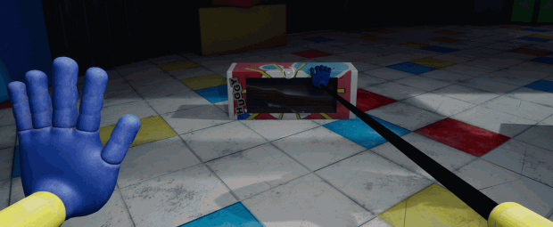

você deve permanecer vivo nesta aventura de terror/quebra-cabeça. Tente sobreviver aos brinquedos vingativos esperando por você na fábrica de brinquedos abandonada. Use o GrabPack para hackear circuitos elétricos ou prender qualquer coisa de longe. Explore a instalação misteriosa... e não seja pego.
Bem-vindo à Playtime Co.!
Playtime Co. já foi o rei da indústria de fabricação de brinquedos... até que todos dentro da fábrica um dia desapareceram no ar. Agora, anos depois, você deve explorar a fábrica abandonada e descobrir a verdade.

Os Brinquedos
Os brinquedos da Playtime Co. são um grupo animado! De Bot a Huggy, Catbee a Poppy, Playtime faz tudo! Enquanto estiver na Playtime Co., por que não fazer uma visita aos brinquedos? Você pode fazer alguns amigos...

O GrabPack
Este incrível GrabPack é uma mochila vestível, acompanhada de 2 mãos artificiais presas através de fio de aço. Com esta ferramenta de última geração, não há limite para o que os funcionários da Playtime Co. podem realizar!